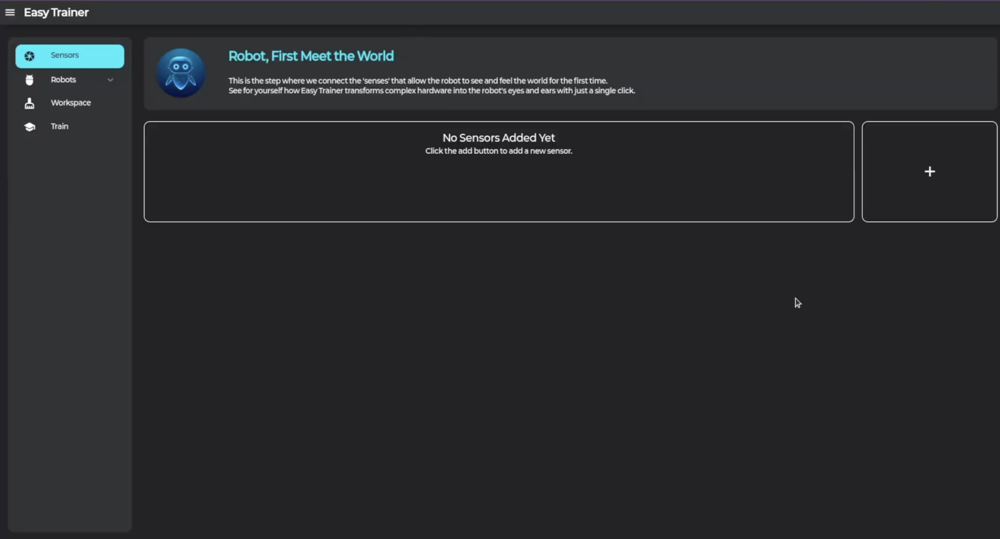
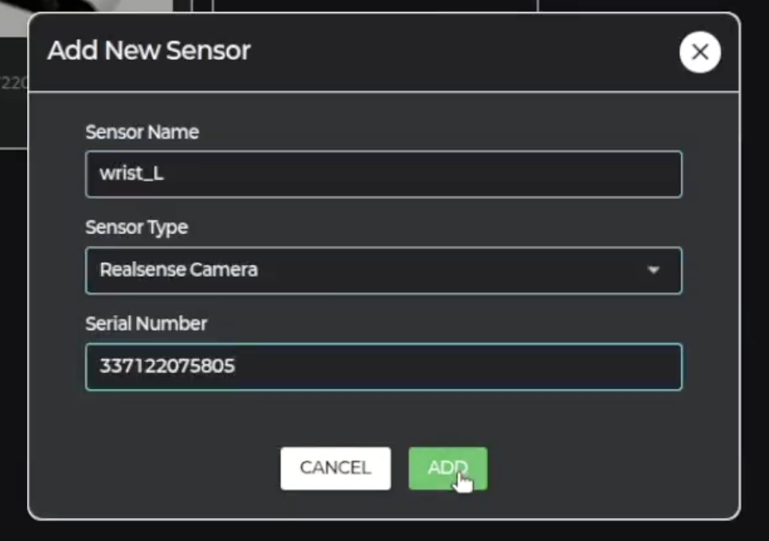

2 Sensor
센서 설정 및 Intel Realsense 연결 방법을 안내합니다.
📷 센서 추가하기
-
1. 센서 추가

센서 페이지에서 "+" 버튼을 클릭합니다. -
2. 센서 정보 입력

센서 이름, 센서 종류, 시리얼 넘버를 입력합니다. -
3. 센서 확인
추가된 센서의 버튼을 클릭하여 카메라 화면을 확인합니다.
🎥 지원 센서
Intel Realsense 지원
Intel Realsense 시리즈 센서를 완벽하게 지원합니다.

💡 유용한 팁
센서를 추가한 후 반드시 카메라 화면이 정상적으로 표시되는지 확인하세요.